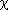
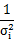
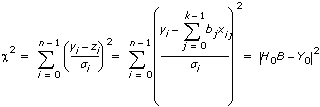

initialize, when TRUE, initializes the internal state of the VI.
H is the matrix that represents the formula you use to fit the data set {X,Y}. H[i][j] are the function values of X[i].
y is an input data point.
Standard Deviation is the standard deviation for data point (xi, yi). The default is 1.0. If xi and yi are equal or you do not know their values, leave Standard Deviation empty.
covariance selector indicates whether the VI computes the covariance matrix.
0
do not compute Covariance
1
compute Covariance
algorithm specifies the algorithm this VI uses to compute Best Fit.
0
SVD (default)
1
Givens
2
Givens2
3
Householder
4
LU Decomposition
5
Cholesky
sample length is the length of each set of incoming data. The VI performs computation for each set of data. The default is 100. sample length must be greater than 0 and equal to the number of rows in H.
Coefficients is the set of coefficients that minimize chi squared. The following equation defines 2, where  is equal to the i-th element in Weight:

Best Fit is the fitted data computed by using Coefficients.
Covariance is the matrix of covariance C with k-by-k elements. cjk is the covariance between ai and ak. cjj is the variance of aj. This VI uses the following equation to compute the covariance matrix C:
C = (H0TH0)–1
mse is the mean square error.
error returns any error or warning from the VI. You can wire error to the Error Cluster From Error Code VI to convert the error code or warning into an error cluster.
The General LS Linear Fit PtByPt VI uses the least-chi-square method for observation data sets where i = 0, 1, …, n – 1, where n is the number of your observation data sets.
The General LS Linear Fit PtByPt VI finds the k-dimensional linear curve values and the set of k-dimensional linear fit coefficients, which describe the k-dimensional linear curve that best represents the input data set using the least-squares solution. The general form of the k-dimensional linear fit is
z[i] = b[0] + Sum{b[j] H(X[i], j)} for j = 1, 2, …, k – 1; i = 0, 1, …, n – 1,
where H is the input matrix which represents the formula you use to fit the data set{X, Y},

 Add to the block diagram
Add to the block diagram Find on the palette
Find on the palette